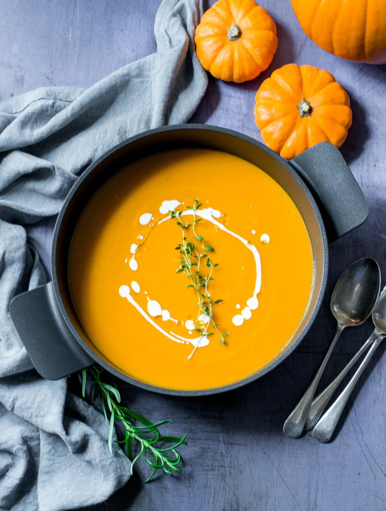

Pumpkin Soup

Description
Nothing warms the belly like a bowl of soup. Packed full of nutrients and flavour, this pumpkin soup is healthy comfort food at it's best.
Ingredients
- 1 medium pumpkin
- 3 carrots
- 2 celery stalks
- 1 white onion
- 250ml of oat cream
- 2 cloves of garlic
- 1tsp smoked paprika
- Rosemary
Method
- Preheat the oven to 200°C.
- Cut the pumpkin in half and scoop out the seeds. Place the pumpkin halves on a baking tray and drizzle with olive oil. Season with salt, pepper, and rosemary. Roast in the oven for 45 minutes or until the pumpkin is soft.
- Meanwhile, chop the carrots, celery, and onion. Heat a little olive oil in a large pot over medium heat. Add the chopped vegetables and garlic and cook for 5 minutes until softened.
- Once the pumpkin is cooked, scoop out the flesh and add it to the pot with the vegetables. Add the smoked paprika and oat cream and stir well to combine.
- Bring the soup to a simmer and cook for a further 10 minutes.
- Remove from the heat and blend the soup until smooth using a hand blender. Season to taste with salt and pepper.
- Serve with a drizzle of oat cream and a sprinkle of smoked paprika.